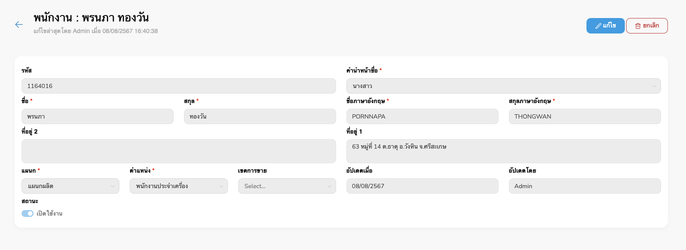
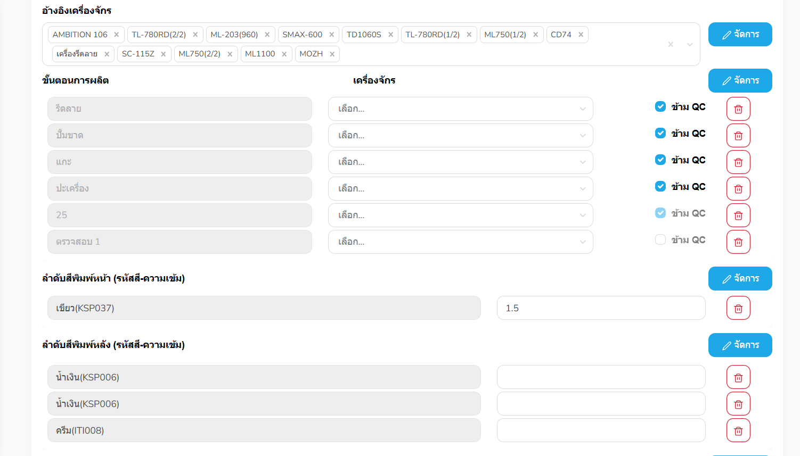
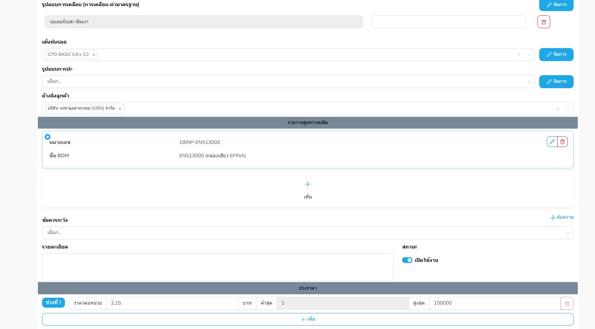

ข้อมูลบริษัท
เพิ่มหรือแก้ไขของข้อมูลบริษัท
เครื่องจักร
เพิ่มหรือแก้ไขคำสั่งเครื่องจักร
เครื่องมือประกอบ
เพิ่มหรือแก้ไขของเครื่องมือประกอบ
จัดการคลังสินค้า
จัดการข้อมูลตำแหน่งของคลังสินค้า
Figure 1: Store management page
Figure 1: Store detail page
Figure 1: Add store location page
ขั้นตอนการเพิ่มคลังสินค้า
- กดปุ่ม “+ เพิ่ม” จากหน้า "คลังสินค้า"
- ระบบจะพามาที่หน้าแบบฟอร์มเพิ่มคลังสินค้า
-
กรอกข้อมูลในช่องต่าง ๆ ให้ครบถ้วน (รายการที่มี *
คือข้อมูลจำเป็นต้องกรอก)
- ตรวจสอบความถูกต้องของข้อมูล
- กดปุ่ม “บันทึก” ที่มุมขวาบนเพื่อยืนยันการเพิ่มข้อมูล
รายการผู้ผลิต
เพิ่ม/แก้ไขรายการผู้ผลิต
Figure 1: Supplier page
Figure 1: Supplier detail page
Figure 1: Add supplier page
ขั้นตอนการเพิ่มผู้ผลิต
- กดปุ่ม “+ เพิ่ม” จากหน้า "ผู้ผลิต"
- ระบบจะพามาที่หน้าแบบฟอร์มเพิ่มผู้ผลิต
-
กรอกข้อมูลในช่องต่าง ๆ ให้ครบถ้วน (รายการที่มี *
คือข้อมูลจำเป็นต้องกรอก)
- ตรวจสอบความถูกต้องของข้อมูล
- กดปุ่ม “บันทึก” ที่มุมขวาบนเพื่อยืนยันการเพิ่มข้อมูล
พนักงาน
เพิ่มหรือแก้ไขของพนักงาน
Figure 1: Employees page

Figure 1: Employee detail page
Figure 1: Add employees page
ขั้นตอนการเพิ่มพนักงาน
- กดปุ่ม “+ เพิ่ม” จากหน้า "พนักงาน"
- ระบบจะพามาที่หน้าแบบฟอร์มเพิ่มพนักงาน
-
กรอกข้อมูลในช่องต่าง ๆ ให้ครบถ้วน (รายการที่มี *
คือข้อมูลจำเป็นต้องกรอก)
- ตรวจสอบความถูกต้องของข้อมูล
- กดปุ่ม “บันทึก” ที่มุมขวาบนเพื่อยืนยันการเพิ่มข้อมูล
รายชื่อลูกค้า
รายชื่อข้อมุลลูกค้า
Figure 1: Customers page
Figure 1: Customer detail page
Figure 1: Add customers page
ขั้นตอนการเพิ่มลูกค้า
- กดปุ่ม “+ เพิ่ม” จากหน้า "ลูกค้า"
- ระบบจะพามาที่หน้าแบบฟอร์มเพิ่มลูกค้า
-
กรอกข้อมูลในช่องต่าง ๆ ให้ครบถ้วน (รายการที่มี *
คือข้อมูลจำเป็นต้องกรอก)
- ตรวจสอบความถูกต้องของข้อมูล
- กดปุ่ม “บันทึก” ที่มุมขวาบนเพื่อยืนยันการเพิ่มข้อมูล
วัสดุ
รายการของวัสดุที่มีอยู่ในระบบ
รายการสินค้า
จัดการข้อมูลสินค้า: เพิ่มหรือแก้ไขรายการสินค้า
ภาพที่ 1: หน้าจัดการรายการสินค้า
องค์ประกอบหลักของหน้า
- ปุ่ม + เพิ่ม: สำหรับสร้างรายการสินค้าใหม่
- ช่องค้นหา: ค้นหาสินค้าตามชื่อสินค้า
- ปุ่มตัวกรอง: กรองสินค้าตามรหัส, ชื่อภาษาไทย และสถานะ
-
รายการข้อมูลสินค้า: ใช้จัดการรายละเอียด เช่น แก้ไขจำนวน
เลือกขั้นตอนการผลิต
รายละเอียดสินค้า
ภาพที่ 2: หน้ารายละเอียดสินค้า
องค์ประกอบหลักของหน้า
- รหัสสินค้า: เช่น 10JNP-EN513000
- หมายเลขชิ้นงาน: เช่น 6005LPAB0000000038
-
กลุ่มวัสดุ: เช่น กระดาษอาร์ตแก้ว, กระดาษปอนด์, กระดาษกล่องแป้ง,
การ์ดอาร์ต, สติ๊กเกอร์, หมึกพิมพ์
- ชื่อสินค้า: ภาษาไทย, ภาษาอังกฤษ และชื่อย่อ
- ชิ้นงานต่อใบพิมพ์: ระบุจำนวนชิ้นงาน
- จำนวนชิ้น/ห่อ: เช่น 800
-
หน่วยสินค้า: สามารถเพิ่มหรือลบหน่วยได้ โดยต้องระบุรหัส, อักษรย่อ
และชื่อหน่วย
- แบบการพิมพ์: เช่น 4 สีชุด + 1 สีพิเศษ
-
รูปแบบผลิตภัณฑ์: จัดการข้อมูลได้ โดยระบุรหัส, อักษรย่อ, ชื่อ
และประเภทสินค้า
- ประเภทย่อย: เพิ่มได้โดยระบุรหัส, อักษรย่อ และชื่อประเภทย่อย
- มิติผลิตภัณฑ์: ความกว้าง, ความยาว, ความสูง และหน่วย
- ขนาดใบพิมพ์: ความกว้าง, ความยาว และหน่วย

ภาพที่ 3: รายละเอียดสินค้าเพิ่มเติม
-
อ้างอิงเครื่องจักร: เพิ่มได้จากข้อมูลหน้าเครื่องจักร
พร้อมกดยืนยันบันทึก
-
ขั้นตอนการผลิต: เพิ่มได้โดยเลือกขั้นตอน, เครื่องจักร และตัวเลือก QC
- ลำดับสีพิมพ์หลัง: ระบุรหัสสีและความเข้ม เพิ่มหรือลบได้

ภาพที่ 4: รายละเอียดสินค้าเพิ่มเติม
- รูปแบบการเคลือบ: ระบุรหัส, อักษรย่อ และชื่อ สามารถลบรายการได้
- เส้นทับรอย: ระบุรหัส, อักษรย่อ และชื่อ สามารถลบได้
- รูปแบบการปะ: ระบุรหัส, อักษรย่อ และชื่อ สามารถลบได้
- อ้างอิงลูกค้า: เลือกได้หลายรายการ
-
รายการสูตรการผลิต (BOM): เพิ่มหรือแก้ไขได้
พร้อมกำหนดให้เป็นข้อมูลหลัก
- ข้อควรระวัง: เพิ่มได้จากรายการที่มี และสามารถลบออกได้
- รายละเอียด: ข้อมูลเชิงลึกเกี่ยวกับสินค้า
- สถานะ: สถานะการใช้งานของสินค้า
-
ช่วงราคา: ระบุราคาต่อหน่วยขั้นต่ำ-สูงสุด สามารถลบได้เฉพาะช่วงล่าสุด
ตารางการส่งออก
รายละเอียดรูปแบบตารางการส่งออก
สูตรการผลิต (BOM)
รายการวัตถุดิบที่รวมออกมาเป็นสูตรการผลิต